Bản đồ 3D Bảy Núi – An Giang (trước 2025)
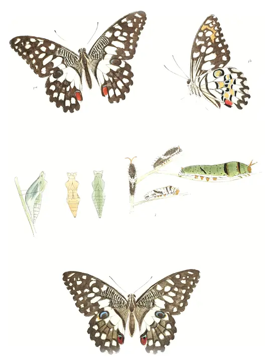
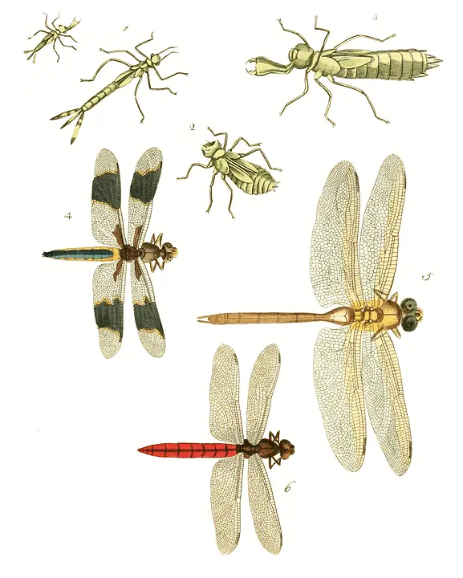
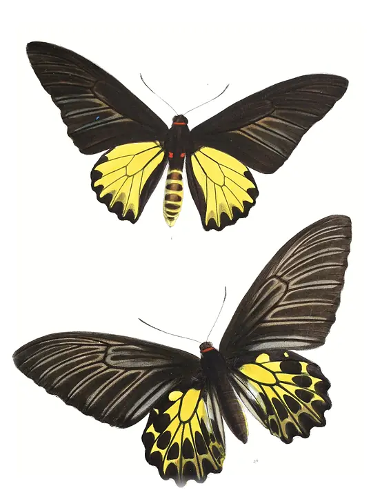
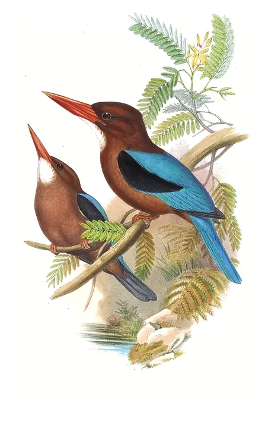
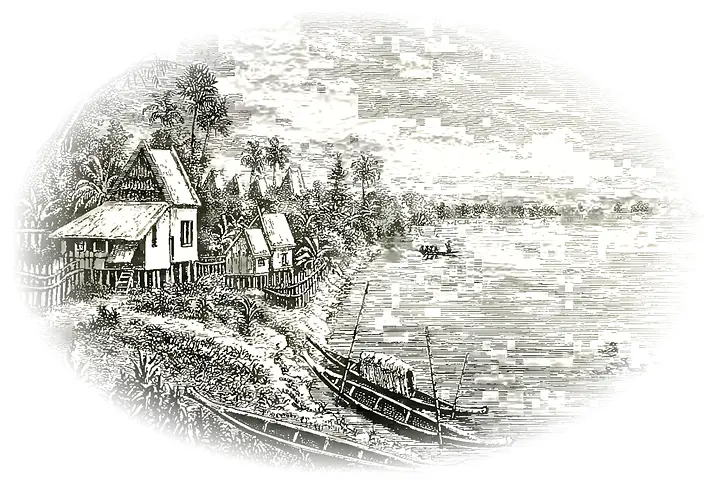
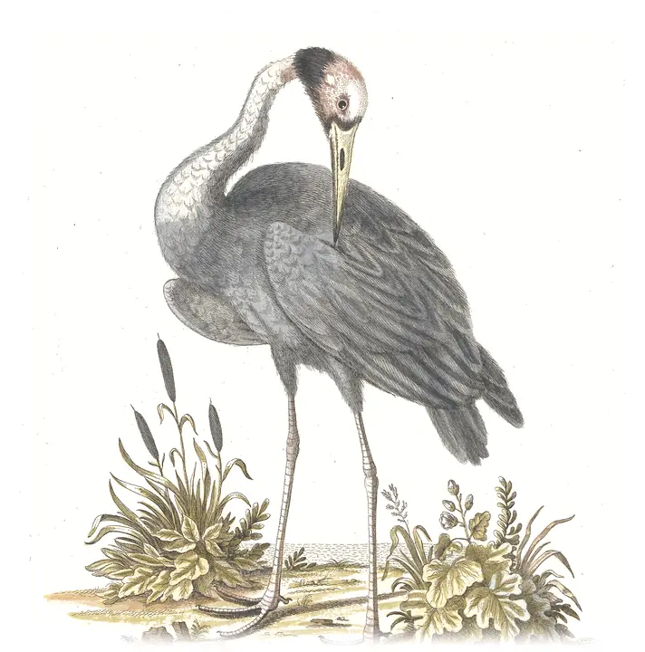
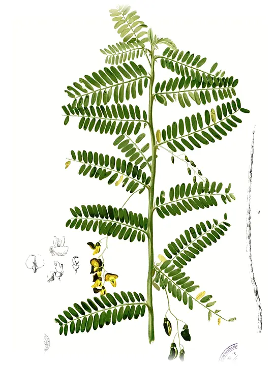
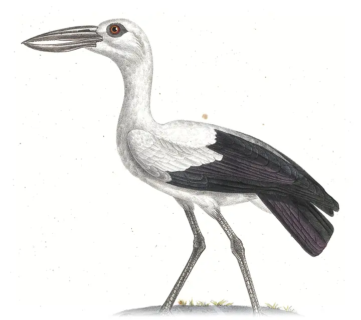
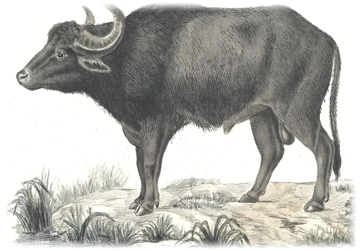
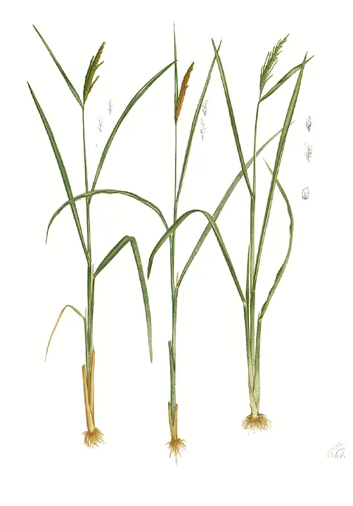
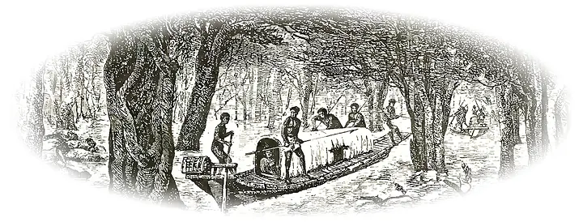
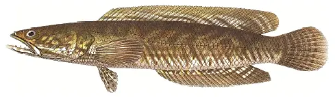
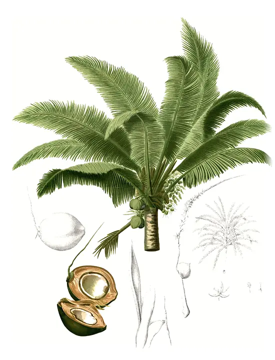
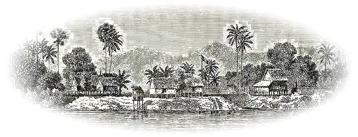
Tranh minh hoạ thế kỷ 19, phạm vi công cộng · 19th-century public-domain plates: M. Blanco, Flora de Filipinas; J. Gould, Birds of Asia; Iconographia Zoologica (University of Amsterdam); P. Bleeker; F. Moore; D. Drury; L. Delaporte, Voyage d’exploration en Indo-Chine (1873). Wikimedia Commons.